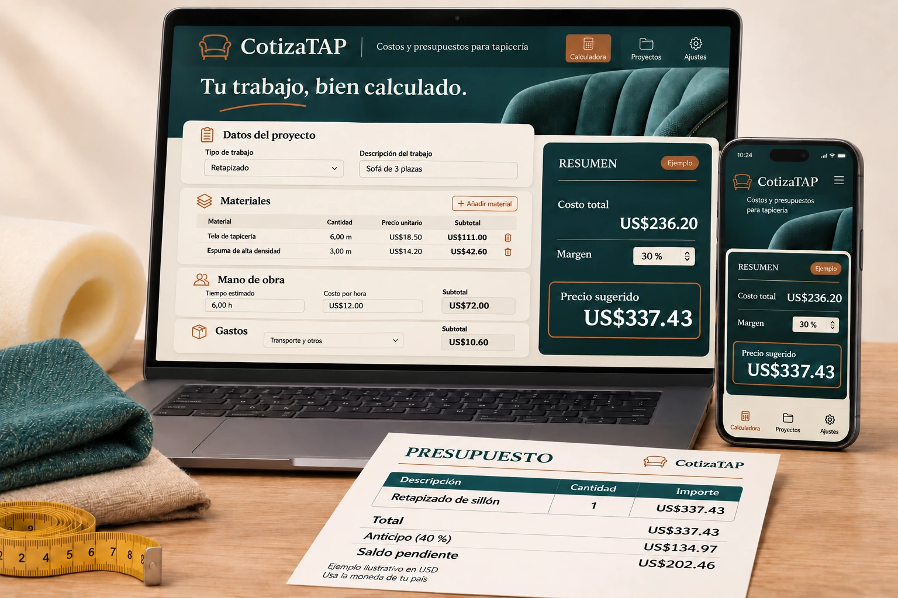

UN COMPLEMENTO PARA TU TALLER
Que tu próximo presupuesto
no se quede corto.
La tela no es todo. Cuenta también los recortes, las horas y los gastos antes de dar tu precio.

Usa la moneda de tu paísMoneda configurable, sin conversión automática.
DE LA IDEA AL PRESUPUESTO
Tus costos, reunidos.
Tu precio, con criterio.
CotizaTAP es una calculadora de costos y presupuestos para tapicería. Completa los datos de cada trabajo y revisa el resultado antes de cotizar.
- Cuenta lo que se suele quedar por fuera
Materiales, desperdicio, mano de obra y gastos del proyecto.
- Revisa tu margen antes de dar un descuento
Define tu margen y observa cómo cambia con el descuento.
- Presenta un presupuesto claro a tu cliente
Genera la vista del cliente sin mostrar tus costos internos y guárdala como PDF desde el navegador.
AÑADE COTIZATAP A TU PEDIDO
Calculadora de costos y presupuestos
para tapicería
US$16.99
Precio de esta oferta · Pago único
Complemento opcional, vendido por separado. Tu compra principal no depende de añadirlo.
Ya tienes ideas para tu taller.
Ahora revisa tus números antes de decir «te lo hago por…».